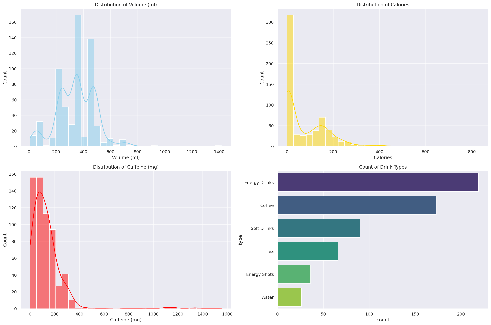
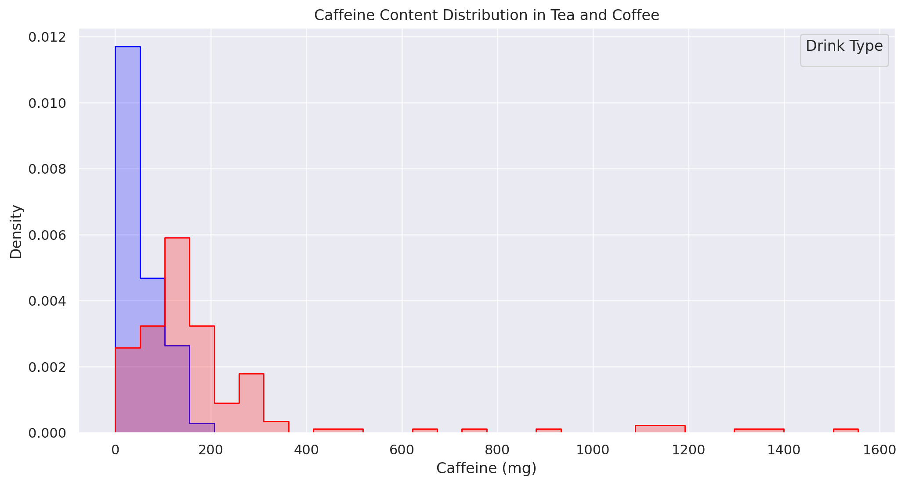

ChatGPT for Rapid Analysis of Drink Content

AI, machine learning and large language models have become powerful tools in data analysis. Here we explore the ability for ChatGPT to provide rapid analysis of data sets. We will use the linked caffeine data set (https://www.kaggle.com/datasets/heitornunes/caffeine-content-of-drinks/data) to test ChatGPT’s ability to describe, interpret and visualise datasets.
Descriptive Analysis
To start, download the dataset and drag and drop the zip file into the prompt box and hit enter. Once loaded, GPT will confirm the file name and is then ready to begin:

Prompt: Give a brief description of the attributes in this dataset.

Prompt: Perform descriptive analysis on each column.

Here we can see that GPT has been able to read the csv file. It can identify the attributes and give a short disruption. Using the word ‘brief’ in the prompt can be useful to stop rambling answers. Beyond this, GPT can perform descriptive analysis, giving helpful insights such as: the number of unique values, the range, mean and percentiles. For larger datasets, prompting GPT for separate analysis of floats and objects in tables can be helpful. Try this prompt: ‘Perform descriptive analysis on the above dataset, output results in two tables one for floats and one for objects.
Exploratory Analysis
Next, let’s see how GPT can give further insight and even write Python code to create visuals.
Prompt: Perform Exploratory Analysis on each of these columns, provide an appropriate visualisation to represent the content of each column separately (you do not need to do this for the drink column), for example a histogram for numeric columns.
GPT created the following graphs and then went on to describe each, commenting on the peaks and skew, most common drink type, and more.
Finally, we can be specific with GPT, whether that’s comparing specific metrics, using specific charts, filtering data or even changing the stylistic elements. Here’s an example:
Prompt: Create a dual histogram showing the caffeine content of drink types tea and coffee, use red and blue colour scheme.
Final Thoughts
ChatGPT and other large language models can perform data analysis in minutes, where using traditional means would take hours. I expect workflows such as seen above will become the ad hoc data analysis of the future. However, this does come without serous limitations. AI is known for ‘hallucinations’ where it will generate false information, as it does not have real world experience and is simply a predictive text generator with powerful tools at its disposal. These hallucinations are less common in its most recent iteration (at time of writing GPT4.0), especially when using the Advanced Data analysis plug in. With due diligence in inspecting the code it writes and referencing the original dataset it is hard to compete with GPT as an assistant to data analysis.